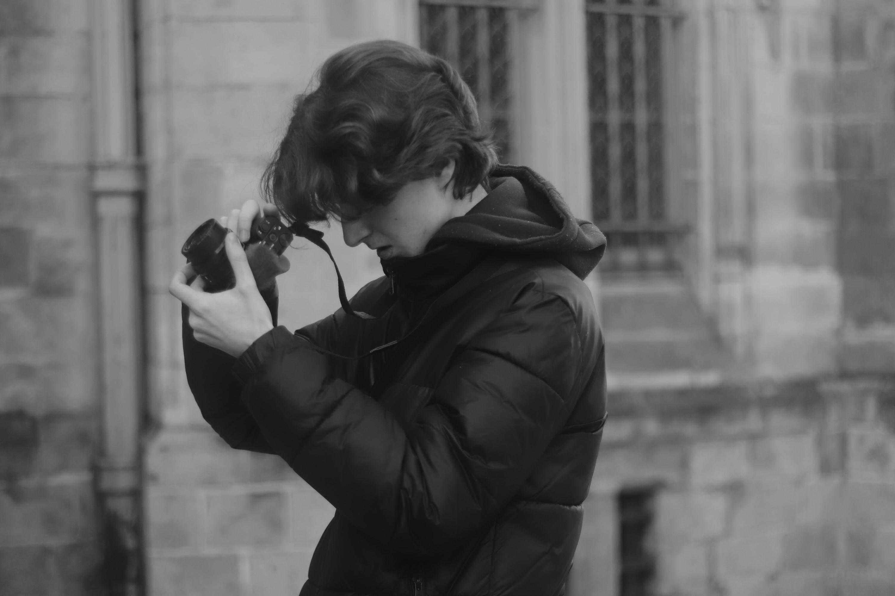

à propos
De Moi
Passionné par l’image et le cinéma, j’aime vivre de nouvelles expériences et enrichir mes compétences. Mon objectif est d’allier vidéo et voyage pour capturer et partager le monde autrement. Voici une présentation de moi et de mon parcours.

Salut ! Moi c’est Gaspard ! Je suis un étudiant en audiovisuel qui rêve grand. J’ai grandi dans un univers familial où l’art visuel et musical prenaient beaucoup de place. Je suis un grand fan de styles musicaux très différents : Nu métal, rock, pop, retro, rap américain... Mais surtout les musiques de films ! Pratiquant la guitare électrique pendant un bon nombre d’années, j’ai développé une réelle admiration pour la musique, et j’y suis encore plus attentif quand je regarde des œuvres audiovisuelles. J’ai l’habitude depuis très jeune de regarder des films. Ça a commencé dans le salon de la maison avec mes parents et ma sœur, à l’internat du lycée, jusqu’à aujourd’hui, où j’essaye d’aller au cinéma plusieurs fois par mois.

Au lycée, quand on m’a proposé l’option et la spécialité Cinéma-Audiovisuel, j’ai directement su qu’il fallait que je tente ma chance. J’ai donc pratiqué pendant 3 ans tous les aspects du cinéma. Ça a confirmé mon envie de travailler dans ce domaine. Après plusieurs projets réalisés, il a fallu que je choisisse ma voie. J'ai décroché mon bac avec mention et continué dans un BTS public en audiovisuel, dans la branche spécialisée en montage et post-production. Or, je ne veux pas seulement m’arrêter au montage. Bien que cela soit une des activités que je préfère, je vois au-delà du montage, et je rêve de me spécialiser dans d’autres domaines, comme la photographie, le drone, la captation vidéo ou encore l’étalonnage. Tous ces domaines me passionnent. Alors si toi aussi tu veux découvrir tout ça, ou que tu recherches des gens motivés, contacte-moi !